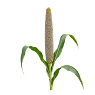

होम / बाजरा

बाजरा का भाव आज | Bajra Mandi Price Today
बाजरा के आज के उपलब्ध मंडी भाव देखें—नागौर, बीकानेर, जोधपुर और डीसा के मॉडल, न्यूनतम और अधिकतम रेट।
नीचे मंडी-वार सूची में बाजरा के उपलब्ध भाव दिए हैं। मंडी के नाम पर क्लिक करके उस मंडी की दूसरी फसलों के भाव भी देख सकते हैं।
बाजरा का भाव कैसे देखें और रेट किन बातों से बदलता है
बाजरा शुष्क क्षेत्रों की प्रमुख मोटा अनाज फसल है। इसका भाव स्थानीय आवक, दाने की गुणवत्ता और खाद्य या पशु-आहार की मांग के अनुसार अलग हो सकता है।
आज का बाजरा भाव कैसे देखें
इस पेज की मंडी-वार तालिका में न्यूनतम, मॉडल और अधिकतम भाव देखें। अपनी नज़दीकी मंडी तथा उपलब्ध दूसरी मंडियों के भाव की तुलना करके फैसला लेना अधिक उपयोगी रहता है।
- अपनी मंडी या राज्य चुनकर भाव देखें।
- न्यूनतम, मॉडल और अधिकतम भाव में अंतर समझें।
- पुराने और नए उपलब्ध रिकॉर्ड में फर्क देखकर निर्णय लें।
गुणवत्ता और ग्रेड का असर
बाजरे में नमी, दाने की सफाई, रंग, आकार और अन्य दानों की मिलावट पर बोली का अंतर आ सकता है। सूखा और साफ माल अलग grade में देखा जाता है।
आवक, मांग और बाजार
कटाई के समय नई आवक बढ़ने और स्थानीय मांग बदलने से बाजार पर असर पड़ता है। पास की मंडियों में परिवहन लागत भी मिलने वाले भाव का फर्क बढ़ा सकती है।
बाजरा बेचने या खरीदने से पहले ध्यान रखें
- बाजरे को अच्छी तरह सुखाकर ले जाएँ।
- खाद्य और पशु-आहार खरीदारों की मांग का अंतर समझें।
- नागौर, बीकानेर या पास की उपलब्ध मंडियों से तुलना करें।
अक्सर पूछे जाने वाले सवाल
100 किलो बाजरा का भाव क्या है?
100 किलो यानी 1 क्विंटल बाजरा का भाव विभिन्न कृषि उपज मंडियों में गुणवत्ता और आवक के आधार पर तय होता है। अलग-अलग मंडियों में 100 किलो बाजरे के उपलब्ध नवीनतम उपलब्ध भाव जानने के लिए हमारी वेबसाइट पर ऊपर दी गई टेबल देखें, जहाँ दैनिक आधार पर न्यूनतम और अधिकतम भाव अपडेट किए जाते हैं। हमसे जुड़े रहने के लिए हमारा WhatsApp ग्रुप जॉइन करें।